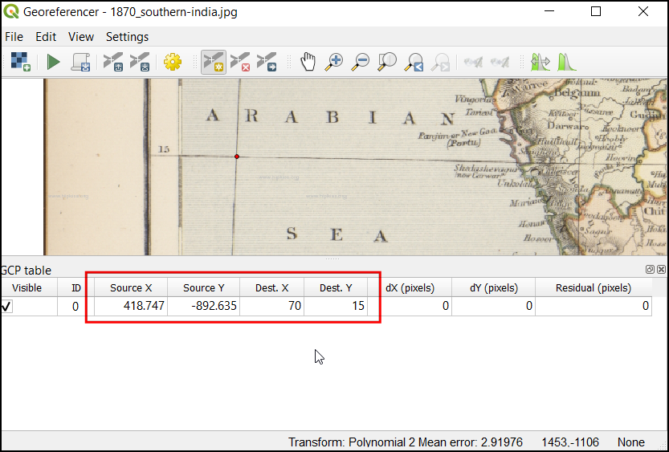

Ujaval Gandhi
Ujaval GandhiTopobladen en gescande kaarten voorzien van geoverwijzingen (QGIS3)¶
De meeste GIS-projecten vereisen het voorzien van geoverwijzingen van rastergegevens. Voorzien van geoverwijzingen is het proces van het toewijzen van coördinaten uit de echte wereld aan elke pixel van het raster. Deze coördinaten worden veelal verkregen door veldonderzoek te doen - verzamelen van coördinaten met een GPS-apparaat voor een aantal eenvoudig te identificeren objecten op de afbeelding of de kaart. In sommige gevallen, waar u op zoek bent naar het digitaliseren van gescande kaarten, kunt u de coördinaten verkrijgen vanuit markeringen op de afbeelding van de kaart zelf. met behulp van die monster-coördinaten of GCP’s ( Grond ControlePunten ), wordt de afbeelding opnieuw geprojecteerd en passend gemaakt binnen het gekozen coördinatensysteem. In deze handleiding zal ik de concepten, strategieën en gereedschappen binnen QGIS bespreken om een zeer nauwkeurig geoverwijzing te bereiken.
Deze handleiding is om een afbeelding die informatie over coördinaten beschikbaar heeft op de kaartafbeelding zelf (d.i. rasters met labels) te voorzien van geoverwijzingen. Als uw bronafbeelding dergelijke informatie niet heeft kunt u de methode gebruiken die is besproken in Geo-verwijzingen voor satellietbeelden (QGIS3)
Overzicht van de taak¶
We zullen een gescande kaart van zuidelijk India van 1870 gebruiken en die voorzien van geoverwijzingen met behulp van QGIS.
Andere vaardigheden die u zult leren¶
Hoe datum- en coördinatensysteem voor oude kaarten te bepalen.
Sla de gemaakte GCP op.
Bewerk de gemaakte GCP om die fijn af te stemmen.
De gegevens ophalen¶
Hipkiss’s Scanned Old Maps website heeft een uitstekende verzameling gescande kaarten zonder auteursrechten die men voor onderzoek kan gebruiken.
Download de kaart 1870 map of southern India en sla die als een JPG-afbeelding op op uw harde schijf.
Voor het gemak kunt u direct een kopie van de gegevensset downloaden vanaf de link hieronder:
Procedure¶
Open QGIS en klik op om het gereedschap te openen.
Notitie
Vanaf QGIS versie 3.26 en hoger kan de Georeferencer worden gestart via .

De Georeferencer is opgedeeld in 2 gedeelten. Het bovenste gedeelte is waar de afbeelding zal worden weergegeven en in het onderste gedeelte zal een tabel verschijnen die uw GCP’s zal weergeven.

Nu zullen we onze JPG-afbeelding openen. Ga naar . Blader naar de gedownloade afbeelding van de gescande kaart en klik op Openen.

U zult zien dat de afbeelding wordt geladen in het bovenste gedeelte. U kunt de knoppen voor Zoomen/Verschuiven in de werkbalk gebruiken om meer over de kaart te weten te komen.

Nu moeten we enkele coördinaten toewijzen aan enkele punten op deze kaart. Als u goed kijkt, zult u een coördinatenraster zien met markeringen. Dit zijn de rasterlijnen voor breedte- en lengtegraad.

Vóór we beginnen met het toevoegen van Grond Controle Punten (GCP), moeten we de instellingen voor de Transformatie definiëren. Klik op het pictogram van het vliegwiel in het venster van Georeferencer om de Instellingen voor transformatie te openen.

Kies, in het dialoogvenster Transformatie instellingen, het Transformatie type als
Polynomial 2. Bekijk de documentatie van QGIS <https://docs.qgis.org/testing/nl/docs/user_manual/working_with_raster/georeferencer.html?highlight=georeferencer#available-transformation-algorithms>`_om meer te leren over de verschillende types voor transformatie en hun gebruik. Selecteer dan de :guilabel:`Hersampling methode alsNearest neighbor. Klik op de knop CRS selecteren naast Doel SRS.

Als u een gescande kaart zoals deze gaat voorzien van geoverwijzingen, kunt u de informatie voor het CRS uit de kaart zelf halen. Kijkend naar onze afbeelding van de kaart, staan de coördinaten in Latitude/Longitude. Er wordt geen informatie voor de datum gegeven, dus moeten we uitgaan van een toepasselijke. Omdat het India is en de kaart al vrij oud is, kunnen we er op wedden dat de datum Everest 1830 ons goede resultaten zal geven. Zoek naar
everesten selecteer het CRS met de oudste definitie van de datum Everest (EPSG:4042). Klik op OK.

Notitie
Survey of India Topo Sheets gemaakt tussen 1960 en 2000 gebruiken de datum Everest 1956 spheroid and India_nepal. Als u SOI Topo Sheets voorziet van geoverwijzingen, kunt u een aangepast CRS in QGIS definiëren met de volgende parameters en dat in deze stap gebruiken. Deze definitie is inclusief parameters delta_x, delta_y en delta_z voor het transformeren van deze datum naar WGS84. Bekijk deze pagina voor meer informatie over Indian Grid System.
+proj=longlat +a=6377301.243 +b=6356100.2284 +towgs84=295,736,257,0,0,0,0 +no_defs
Notitie
De meeste kaarten worden gemaakt met een Geprojecteerd CRS. Als de kaart die u probeert te voorzien van geoverwijzingen een geprojecteerd CRS gebruikt dat u kent, maar de labels van het rasterwerk staan in een geografisch CRS (latitude/longitude), zou u een alternatieve werkstroom kunnen gebruiken om vervorming te minimaliseren. In plaats van een geografisch CRS zoals we hier gebruiken, kunt u een vectorraster in QGIS maken en dat transformeren naar het geprojecteerde CRS om het te gebruiken als een verwijzing voor nauwkeurig vaststellen van coördinaten. Bekijk deze pagina voor meer details.
Noem uw uitvoerraster
1870_southern_india_modified.tif. KiesLZWals de Compressie. Selecteer GCP-punten opslaan om de punten op te slaan als een afzonderlijk bestand voor toekomstige doeleinden. Zorg er voor dat de optie Na afloop in QGIS laden is geselecteerd. Klik op OK.

Notitie
Niet gecomprimeerde bestanden van GeoTIFF kunnen zeer groot in grootte zijn. Ze comprimeren is dus altijd een goed idee. U kunt meer te weten komen over de verschillende opties voor comprimeren van TIFF (LZW, PACKBITS of DEFLATE) in dit artikel.
Nu kunnen we beginnen met het toevoegen van de Grond Controle Punten (GCP). Klik op de knop Punt toevoegen.

Plaats nu de kruisdraad op de kruising van de rasterlijnen en klik met links, dit zal in ons geval dienen als de ground-truth. Omdat de rasterlijnen zijn gelabeld, kunnen we de X- en Y-coördinaten van de punten bepalen door ze te gebruiken. In het pop-upvenster, voer de coördinaten in. Onthoud dat X=longitude en Y=latitude. Klik op OK.

U zult merken dat de GCP-tabel nu een rij heeft met details van uw eerste GCP.

Voeg op dezelfde wijze meerdere GCPs toe die de gehele afbeelding bedekken. Hoe meer punten u heeft, hoe nauwkeuriger uw afbeelding wordt geregistreerd ten opzichte van de doelcoördinaten. De transformatie
Polynomial 2vereist tenminste 6 GCPs. Als u eenmaal het minimale aantal vereiste punten voor de transformatie hebt toegevoegd, zult u opmerken dat de GCPs nu niet nul foutwaarden voordX,dYenResidualhebben. Als een bepaald GCP ongebruikelijk hoge foutwaarden heeft, betekent dat gewoonlijk een menselijke fout bij het invoeren van de waarden voor de coördinaten. Dus u kunt dan dat GCP verwijderen en het opnieuw vastleggen. U kunt ook de waarden voor de coördinaten bewerken in de GCP-tabel door te klikken in de cel in de kolommen Dest. X of Dest. Y.

Ga, als u eenmaal tevreden bent met de GCP’s, klik op de knop Geoverwijzingen starten. Dit zal het proces van opnieuw projecteren van de afbeelding starten met behulp van de GCP’s en het maken van het doelraster.

Als het proces eenmaal is voltooid zult u de laag met geoverwijzingen zien geladen in QGIS. Het bepalen van geoverwijzingen is nu compleet. U zult ook zien dat het Project-CRS, in de rechterbenedenhoek, is ingesteld op EPSG:4042 zoals beschreven in de Instellingen voor transformatie.

Sleep en zet de
OpenStreetMapneer als basiskaart vanuit de keuzelijst XYZ Tiles aan de onderzijde van het paneel Browser panel om de laag met geoverwijzingen te verifiëren. Klik, om de transparantie in te stellen, op het pictogram Paneel Laag opmaken openen en selecteer de tab Sytmbologie. Stel de Doorzichtbaarheid in op40 %. Nu zou de afbeelding met geoverwijzingen over de omtrek van de basiskaart moeten liggen.

Als de geoverwijzingen fijner moeten worden afgestemd, kunnen we beginnen met de verzamelde GCP-punten. Blader naar de locatie van het bestand
1870_southern_india_modified.tif. U zult een aanvullend bestand zien, genaamd1870_southern_india_modified.tif.points. Dit bestand file zal de informatie over de GCP-punten bevatten.

Open het gereedschap Georeferencer in QGIS, klik op , en selecteer het bestand
1870_southern_india_modified.tif.points. Dit zal de eerder gemaakte GCP’s laden. Laad daarna het bestand1870_southern_india_modified.tifom uw werk fijn af te stemmen.

{kind=link}
{kind=link}
If you want to give feedback or share your experience with this tutorial, please comment below. (requires GitHub account)